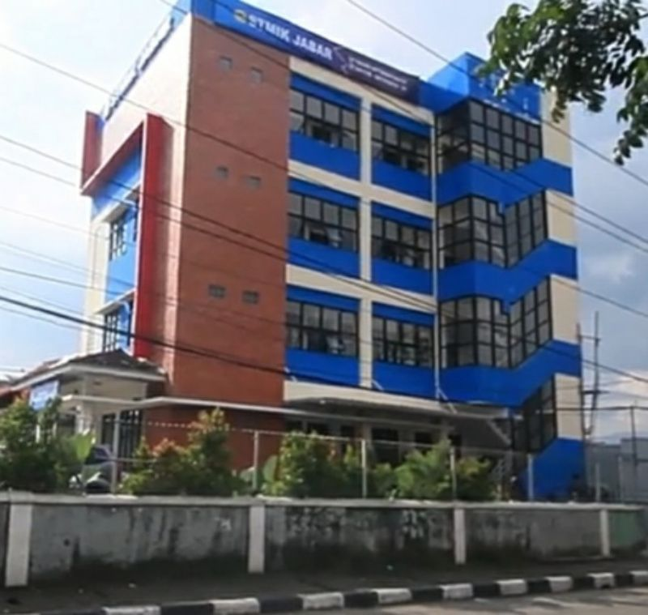

Sejarah
STMIK Jabar merupakan Perguruan Tinggi dibidang Teknologi Informasi dan Komunikasi mempunyai dua program studi, Yaitu : Teknik Informatika (S1) dan Sistem Informasi (S1) yang telah terakreditasi oleh Badan Akreditasi Nasional Perguruan Tinggi (BAN-PT). Sejak awal didirikan oleh Yayasan Al-Ghifari pada tahun 1996, STMIK Jabar telah menjadi bagian dari Pemerintah Jawa Barat dalam meningkatkan kwalitas Sumber Daya Manusia (SDM) selama kurang lebih 20 tahun STMIK Jabar telah menghasilkan kurang lebih 1435 Lulusan yang tersebar diberbagai instansi pemerintah dan perusahaan – perusahaan dalam Negeri dan luar Negeri. Dalam melaksanakan pengajarannya STMIK Jabar menggunakan kurikulum yang disesuaikan dengan tuntutan Stakeholder serta kurikulum yang mengacu kepada Agama Islam dan Kearifan Budaya Lokal yaitu budaya Sunda sehingga didalam kurikulum terdapat 6 SKS Pendidikan Agama Islam dan 3 SKS Pengenalan budaya, sehingga lulusan STMIK Jabar bukan hanya cerdas dalam Teknologi Informasi dan Komunikasi tetapi juga cerdas dalam Emotional Quetion (ESQ) menjadi lulusan STMIK Jabar yang unggul untuk kehidupan Dunia dan Akhirat.